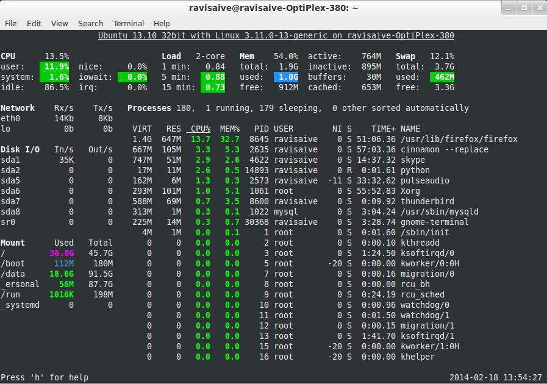
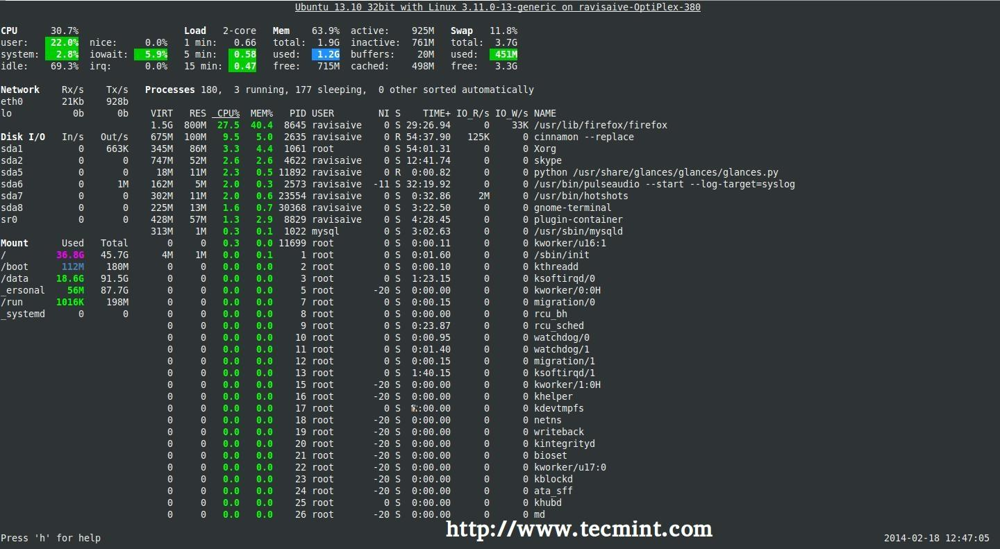

早些时候，我们提到过有很多可以用来监视系统性能的 Linux 系统监视工具。 但我们估计，或许更多的用户会倾向与绝大多数 Linux 发行版都带的工具 （top 命令）。
top 命令是 Linux 下的一个实时任务管理器， 同时也是用于在 GNU/Linux 发行版中寻找系统性能方面的瓶颈，并帮助我们作出正确操作的常用系统监视工具。 她有着一个极为简洁的界面，并自带少量的可以帮助我们快速了解系统性能的实用选项。
但是，有些时候想要通过她寻找一个占用系统资源比较大的应用或进程可能会比较困难。 因为 top 命令本身并不会帮助我们高亮那些吃太多 CPU，内存，或者其他资源的程序。
为了达到这个目标，这里我们将介绍一款超牛逼的系统监视程序 —— Glances。 她可以自动高亮利用最高系统资源的程序，并为 Linux/Unix 服务器提供尽可能多的信息。
什么是 Glances？
Glances 是一个由 Python 编写，使用 psutil 库来从系统抓取信息的基于 curses 开发的跨平台命令行系统监视工具。 通过 Glances，我们可以监视 CPU，平均负载，内存，网络流量，磁盘 I/O，其他处理器 和 文件系统 空间的利用情况。
Glances 是一个用来监视 GNU/Linux 和 FreeBSD 操作系统的 GPL 授权的自由软件。
Glances 同时也提供了很多实用的选项。 其中我们能够在配置文件见到的一项主要的功能就是设置关键值及相应的标签 （careful[小心], warning[警告] 和 critical[严重]）， 然后她会自动帮我们用不同颜色标出系统达到某个瓶颈的信息。
Glances 主要功能
- CPU 信息 （用户的相关应用, 系统核心程序和空闲程序）
- 总内存信息，包括了物理内存，交换空间和空闲内存等等
- 之前的 1 分钟、5 分钟和 15 分钟平均的 CPU 负载
- 网络链接的下行和上行速度
- 处理器总数，以及其活动状态
- 硬盘 I/O 相关（读写）速度详情
- 当前挂载设备的磁盘使用情况
- 高 CPU 和内存使用的进程名，和相关应用的位置
- 在底部显示当前日期和时间
- 将消耗最高系统资源的进程用红色标出 下面是一个 Glances 的使用截图： 
在 Linux/Unix 系统中安装 Glances
虽然这个工具的发布比较晚，但你仍然可以在 Red Hat 系的系统中通过 EPEL 软件源安装。在终端用下面的命令安装：
对于 RHEL/CentOS/Fedora 发行版
yum install -y glances
对于 Debian/Ubuntu/Linux Mint 发行版
sudo apt-add-repository ppa:arnaud-hartmann/glances-stable
$ sudo apt-get update
$ sudo apt-get install glances
如何使用 Glances
首先，你需要在终端中输入以下命令
glances

Glances Preview – Ubuntu 13.10
Glances Preview – Ubuntu 13.10
按下 ‘q‘ （‘ESC‘ 和 ‘Ctrl-C‘ 也可以） 退出
Glances 的默认刷新频率是 1 （秒），但是你可以通过在终端指定参数来手动定义其刷新频率
glances -t 2
Glances 中颜色的含义
Glances 会用一下几种颜色来代表状态：
- 绿色：OK（一切正常）
- 蓝色：CAREFUL（需要注意）
- 紫色：WARNING（警告）
- 红色：CRITICAL（严重）
- 阀值可以在配置文件中设置，一般阀值被默认设置为（careful=50、warning=70、critical=90）。
我们可以按照自己的需求在配置文件（默认在 /etc/glances/glances.conf）中自定义。
Glances 的选项
除了很多命令行选项之外，Glances 还提供了更多的可在其运行时开关输出信息选项的快捷键，下面是一些例子：
a – 对进程自动排序
c – 按 CPU 百分比对进程排序
m – 按内存百分比对进程排序
p – 按进程名字母顺序对进程排序
i – 按读写频率（I/O）对进程排序
d – 显示/隐藏磁盘 I/O 统计信息
f – 显示/隐藏文件系统统计信息
n – 显示/隐藏网络接口统计信息
s – 显示/隐藏传感器统计信息
y – 显示/隐藏硬盘温度统计信息
l – 显示/隐藏日志（log）
b – 切换网络 I/O 单位（Bytes/bits）
w – 删除警告日志
x – 删除警告和严重日志
1 – 切换全局 CPU 使用情况和每个 CPU 的使用情况
h – 显示/隐藏这个帮助画面
t – 以组合形式浏览网络 I/O
u – 以累计形式浏览网络 I/O
q – 退出（‘ESC‘ 和 ‘Ctrl&C‘ 也可以）
远程使用 Glances
你甚至也可以通过 Glances 来监视远程系统。 要在远程系统使用 ‘glances’，需要在服务器运行 ‘glances -s’（-s 启动服务器/客户端模式）命令。
glances -s
Define the password for the Glances server
Password:
Password (confirm):
Glances server is running on 0.0.0.0:61209
注意：当你执行了‘glances’命令后，她会让你为 Glances 服务器设置密码。
当你设置完毕，你将看到 “Glances server is running on 0.0.0.0:61209” （Glances 服务器正在 0.0.0.0 的 61209 端口运行）的消息。
当 Glances 服务器启动后，到本地执行下面的命令来指定服务器IP地址或主机名以链接。
注：这里的 ‘172.16.27.56’ 是我 Glances 服务器的 IP 地址。
# glances -c -P 172.16.27.56
下面是一些在使用服务器/客户端模式时必须知道的事情：
- 在服务器模式，你可以通过
-B 地址来设置绑定地址，也可以通过-p 端口来绑定监听的 TCP 端口 - 在客户端模式，你可以通过同样的
-p 端口来指定服务器端口 - 默认的绑定地址是 0.0.0.0，但这么做会监听所有网络接口的指定端口
- 在服务器/客户端模式下，限制的阀值将由服务器的设置决定
- 你也可以在命令行下用过
-P 密码的方式来为服务器端设置一个密码 ### 总结 Glances 对于大多用户而言是个在系统资源上提供过多信息的工具。但是如果你是一个想要仅从命令行就能快速获取系统整体状况的系统管理员，那这个工具绝对是你的必备利器。
译者注
请不要将 glances（本文中的工具）和 glance（一个 OpenStack 的工具）这两个包搞混了
Ubuntu 官方 Extra 源中的 glances 因为 python 库移动的问题导致无法正常使用 但可以通过建立软链接的方式临时修复：
sudo ln -s /usr/lib/python2.7/dist-packages/glances /usr/share/pyshared/glances
外链：原文
外链：中文